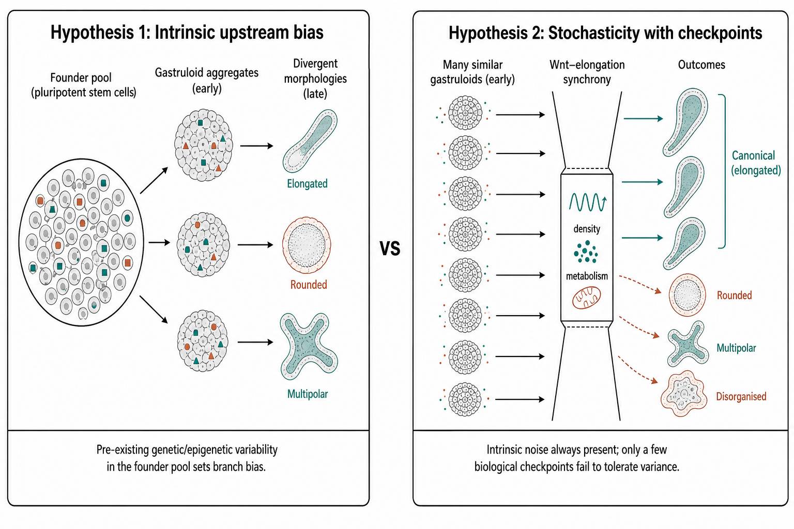

Trajectory bifurcation of gastruloids: biological hypothesis
Source:vignettes/gastruloid-bifuration-methods.qmd
1 Executive summary
The literature that directly targets divergent outcomes emerging from nominally similar gastruloid starts is still smaller than the broader gastruloid field, but it is now substantial enough to reveal a coherent picture. The strongest mouse study for this question is Villaronga-Luque et al. (Villaronga-Luque et al. 2025), because it links individual morphological histories, time-resolved single-cell transcriptomes, and metabolic state to later phenotypic divergence, and then tests causality by metabolic intervention. The key claim is that early oxidative phosphorylation–glycolysis imbalance precedes and drives later aberrant morphology with a neural lineage bias. Data are available at GEO GSE250136, with imaging and analysis deposits.
Across the direct and adjacent literature, proposed drivers of bifurcation fall into four recurring classes (Table 1; Table 2):
- Metabolic state — Luque, Dingare, Stapornwongkul (Villaronga-Luque et al. 2025; Dingare et al. 2024; Stapornwongkul et al. 2025).
- Signalling-state dynamics (especially Wnt/Nodal/SOX2) — Rosen, Rufo, McNamara, Underhill (Rosen et al. 2022; Rufo et al. 2026; McNamara et al. 2024; Underhill and Toettcher 2023).
- Physical or morphogenetic initial conditions (density, size, elongation–lineage coordination) — Rufo, Bennabi, Fiuza, Farag (Rufo et al. 2026; Bennabi et al. 2025; Fiuza et al. 2025; Farag et al. 2024).
- Heritable founder-cell or clone bias — Regalado, Ayyappan, and pre-culture epigenetic memory in Blotenburg (Regalado et al. 2025; Ayyappan et al. 2025; Blotenburg et al. 2025).
No single paper yet closes the full causal chain from founder-cell state, through live signalling and metabolism, to 3D morphogenetic divergence and terminal morphotype in the same individual gastruloids. Luque comes closest; Farag is strongest on explicit morphotype classification; Rufo on phenotypic morphospace; Regalado and Ayyappan on intrinsic, heritable bias (Villaronga-Luque et al. 2025; Farag et al. 2024; Rufo et al. 2026; Regalado et al. 2025; Ayyappan et al. 2025).
The highest-priority next step is a prospective, single-gastruloid, multimodal bifurcation experiment combining Luque-style paired morphology/molecular design with lineage recording, live Wnt/Nodal/ERK reporters, and systematic perturbation of metabolism, density and size, so relative causal weights and interactions can be estimated before visible divergence (Villaronga-Luque et al. 2025; Regalado et al. 2025; Rufo et al. 2026; Bennabi et al. 2025).
2 Scope and inclusion logic
Here “morphotype” includes discrete morphological classes, structured regions of a low-dimensional phenotypic morphospace, and reproducible bifurcating trajectory classes that later produce distinct spatial or morphological outcomes. Papers were prioritised when their main aim was identifying morphotypes, mapping phenotypic landscapes, quantifying inter-gastruloid variability, defining failure modes, or testing drivers of divergent trajectories, ranked by closeness to distinct outcomes from the same nominally naïve starting population. Mechanistically informative papers that alter the start more strongly, or focus on patterning rather than divergence, are treated as adjacent.
The Luque Villaronga study remains the clearest attempt to join phenotype, dynamics, transcriptomics and metabolism in one framework (Villaronga-Luque et al. 2025). Rufo exposes a human 12-cluster morphospace; Farag a decision-tree for endodermal morphotypes; Luque the most reusable multi-modal entry point for reanalysis (Rufo et al. 2026; Farag et al. 2024; Villaronga-Luque et al. 2025).
3 Prioritised literature
Read the field as a core set on divergence/morphotypes and a second ring of explanatory mechanism papers.
Villaronga-Luque et al., Cell Stem Cell 2025 (Villaronga-Luque et al. 2025). Mouse stem-cell embryo / TLS-like system; paired imaging, time-resolved scRNA-seq, metabolic interventions (GSE250136). Driver: early OXPHOS–glycolysis imbalance in NMP-like states predicting later neural-biased aberrant morphology. Evidence: very strong (time order + causal rescue). Limitation: final morphotype taxonomy needs full-text/data reanalysis.
Farag et al., Developmental Cell 2024 (Farag et al. 2024). Mouse gastruloids; live imaging; 500-tree ensemble. Four endodermal morphotypes at 96 h, controlled by coordination between endoderm progression and elongation. Evidence: very strong for this sub-problem; limited to the endodermal branch.
Rufo et al., Nature Communications 2026 (preprint 2024) (Rufo et al. 2026, 2024). Human 2D gastruloids; high-throughput perturbation; 12 clusters; axes cell-density-dependent Wnt and SOX2 stability. Evidence: very strong morphospace map; limitation: 2D and largely perturbation-driven.
Rosen et al., bioRxiv 2022 (Rosen et al. 2022). Individual mouse gastruloids, MULTI-seq, days 3–5 (GSE212050). Mesoderm- vs neural-biased bifurcation with early WNT-associated activity difference. Evidence: strongly suggestive; correlative and preprint.
Regalado et al., bioRxiv 2025 (Regalado et al. 2025). Monoclonal gastruloids + DNA Typewriter. Heritable founder mESC state fluctuations bias trajectories. Evidence: strong on heritability; monoclonal design.
Ayyappan et al., bioRxiv 2025 (Ayyappan et al. 2025). Clonal propensities and division of labour among biased clones. Evidence: strongly suggestive; clone-centric.
Triandafillou et al., bioRxiv 2025 (Triandafillou et al. 2025). Spatial maps of 26 gastruloids; emphasises reproducible organisation (counterweight to heterogeneity narratives).
Bennabi et al., Science Advances 2025 (Bennabi et al. 2025). System size decouples morphogenetic timing from transcriptional programmes.
Fiuza et al., Cells & Development 2025 (Fiuza et al. 2025). Mechanical/geometric constraints and a robustness size window.
Balayo et al., Development 2025 (Balayo et al. 2025). Medium formulation (N2B27 vs NDiff227) shifts elongation and neural-vs-mesoderm bias.
Blotenburg et al., PLOS ONE 2025 (Blotenburg et al. 2025). Pre-culture pluripotency/epigenetic memory alters reproducibility and lineage composition.
Adjacent mechanisms. Dingare (mannose / Frzb glycosylation), Stapornwongkul (glycolysis → Nodal/Wnt), McNamara (Wnt recording and sorting), Underhill (ERK/Akt) (Dingare et al. 2024; Stapornwongkul et al. 2025; McNamara et al. 2024; Underhill and Toettcher 2023).
4 Comparative tables
| Priority | Paper | Status and DOI | Dataset and system | Assays | Computational approach | Main morphotypes or trajectory classes | Proposed drivers | Evidence strength and main limitation |
|---|---|---|---|---|---|---|---|---|
| Highest | Villaronga-Luque et al., 2025 | Peer-reviewed; 10.1016/j.stem.2025.03.012 | GSE250136; mouse stembryos / trunk formation | scRNA-seq, imaging, metabolism, perturbations | Multi-modal integration; early→late prediction | Aberrant neural-biased vs successful trunk-like ends | Early OXPHOS–glycolysis imbalance | Strongest overall; taxonomy under-specified in abstract (Villaronga-Luque et al. 2025) |
| Highest | Farag et al., 2024 | Peer-reviewed; 10.1016/j.devcel.2024.05.017 | Mouse gastruloids; Zenodo/GitHub | Live imaging; interventions | 500-tree bootstrap ensemble | Four endodermal morphotypes at 96 h | Endoderm progression ↔︎ elongation | Very strong for endoderm branch (Farag et al. 2024) |
| Highest | Rufo et al., 2024/2026 | Final 10.1038/s41467-026-69596-6 | Human 2D gastruloids | Perturbation IF; live β-catenin | Morphospace clustering + morphogen model | 12 clusters; BRA/SOX2/symmetry failure modes | Density-dependent Wnt; SOX2 stability | Very strong landscape; 2D/perturbed (Rufo et al. 2026) |
| High | Rosen et al., 2022 | Preprint; 10.1101/2022.09.27.509783 | GSE212050; individual mouse gastruloids | MULTI-seq time course | Trajectory / gastruloid-level bias | Mesoderm- vs neural-biased | Early WNT-associated activity | Suggestive; correlative preprint (Rosen et al. 2022) |
| High | Regalado et al., 2025 | Preprint; 10.1101/2025.05.23.655664 | Monoclonal mouse gastruloids | scRNA-seq; DNA Typewriter | Lineage-tree reconstruction | Poor progress / meso / neural / rare types | Heritable founder-state fluctuations | Strong on heritability (Regalado et al. 2025) |
| High | Ayyappan et al., 2025 | Preprint; 10.1101/2025.07.12.664536 | Clonally traced mouse gastruloids | Lineage + spatial | Clone propensity maps | Anterior/posterior clone bias; mixing rescues | Division of labour among clones | Suggestive; clone-centric (Ayyappan et al. 2025) |
| Moderate | Triandafillou et al., 2025 | Preprint; 10.1101/2025.07.14.664617 | 26 individual gastruloids | Spatial sc mapping | Spatial atlas; L-metric | Emphasises reproducible organisation | Reproducibility benchmark | Counterpoint to strong bifurcation narratives (Triandafillou et al. 2025) |
| Moderate | Bennabi et al., 2025 | Peer-reviewed; 10.1126/sciadv.adv7790 | Size-perturbed mouse gastruloids | Live imaging; transcriptomics | Morphometric timing | Delayed SB; multipolarity; prolonged elongation | System size | Strong on route/timing (Bennabi et al. 2025) |
| Moderate | Fiuza et al., 2025 | Peer-reviewed; 10.1016/j.cdev.2025.204043 | Size/constraint regimes | Morphology; imaging; transcriptomics | Constraint analysis | Robust window outside which dynamics fail | Mechanical/geometric constraints | Moderate; broader framing (Fiuza et al. 2025) |
| Priority | Paper | Status and DOI | Why it matters | Why it ranks lower |
|---|---|---|---|---|
| Moderate | Balayo et al., 2025 | 10.1242/dev.204774 | Medium formulation shifts elongation and neural-vs-mesoderm bias | Divergence induced by medium, weaker “same naïve start” (Balayo et al. 2025) |
| Moderate | Blotenburg et al., 2025 | 10.1371/journal.pone.0317309 | Pre-culture epigenetic/pluripotency state affects reproducibility | Intentional input-state shift before aggregation (Blotenburg et al. 2025) |
| Adjacent | Dingare et al., 2024 | 10.1016/j.devcel.2024.03.031 | Mannose / Frzb glycosylation and symmetry breaking | Mechanism, not morphotype map (Dingare et al. 2024) |
| Adjacent | Stapornwongkul et al., 2025 | 10.1016/j.stem.2025.03.011 | Glycolysis regulates Nodal/Wnt and germ-layer proportions | Driver paper, not morphotype-centred (Stapornwongkul et al. 2025) |
| Adjacent | McNamara et al., 2024 | 10.1038/s41556-024-01521-9 | Patchy Wnt rearranged into one pole by cell sorting | Symmetry breaking, not variability map (McNamara et al. 2024) |
| Adjacent | Underhill and Toettcher, 2023 | 10.1242/dev.201663 | ERK and Akt control size, shape and patterned expression | Not framed as bifurcation/morphospace (Underhill and Toettcher 2023) |
5 Synthesis of drivers and disagreements
The field’s central disagreement is not whether divergence exists, but where the dominant variance enters. One group argues that the decisive step is upstream and intrinsic: Rosen (early Wnt-associated branch bias), Regalado (heritable founder states), Ayyappan (useful clonal propensities / division of labour) (Rosen et al. 2022; Regalado et al. 2025; Ayyappan et al. 2025). A second group argues the decisive step is state-dependent but extrinsically tuneable: Luque (metabolism), Rufo (density/SOX2), Bennabi and Fiuza (size/constraint), Farag (elongation–lineage coordination) (Villaronga-Luque et al. 2025; Rufo et al. 2026; Bennabi et al. 2025; Fiuza et al. 2025; Farag et al. 2024). These imply bifurcation through multiple control layers.
Empirically, reproducibility versus heterogeneity depends on the level measured: broad tissue classes can look reproducible (Beccari et al. 2018; Triandafillou et al. 2025) while lineage proportions, timing, polarity and terminal morphology still vary (Rosen et al. 2022; Villaronga-Luque et al. 2025; Regalado et al. 2025). Metabolism-centric and signalling-centric accounts are best read as coupled: metabolism changes signalling competence, interpretation, or response thresholds (Villaronga-Luque et al. 2025; Dingare et al. 2024; Stapornwongkul et al. 2025; Rufo et al. 2026; Rosen et al. 2022; McNamara et al. 2024; Underhill and Toettcher 2023).
A conspicuous gap remains in human 3D systems: Rufo/FATE-MAP is strong in 2D human morphospace, but Luque- or Farag-depth longitudinal 3D bifurcation maps are still largely mouse (Rufo et al. 2026; Villaronga-Luque et al. 2025; Farag et al. 2024).
5.1 Two working hypotheses
Formally, let \(X_0\) be the founder-pool state (genetic/epigenetic/clonal composition), \(\varepsilon_t\) intrinsic developmental noise (as in embryos), and \(C_t\) a vector of checkpoints (e.g. Wnt induction synchronised with elongation and spatial patterning). Then morphotype \(M\) can be written schematically as
\[ M = f\!\bigl(X_0,\; \varepsilon_{0:T},\; C_{0:T}\bigr) \tag{1}\]
Hypothesis 1 (intrinsic upstream bias) emphasises variation in \(X_0\): pre-existing mutations and/or epigenetic variability in the gastruloid founder pool set branch bias before aggregation or early patterning (Regalado et al. 2025; Ayyappan et al. 2025; Rosen et al. 2022; Blotenburg et al. 2025).
Hypothesis 2 (stochasticity with intolerant checkpoints) emphasises that \(\varepsilon_t\) is always present, but only a small subset of biological conditions \(C_t\) fails to buffer that variance—for example synchronisation of Wnt induction with elongation and spatial development (Farag et al. 2024; Rufo et al. 2026; Bennabi et al. 2025; McNamara et al. 2024; Villaronga-Luque et al. 2025).
Figure 1 summarises this contrast.

6 Recommended next experiments and analyses
- Luque-plus-lineage — pair morphology/molecular histories with Regalado-style lineage recording to test whether early metabolic predictors sit in founder lineages or arise post-aggregation (Villaronga-Luque et al. 2025; Regalado et al. 2025).
- Factorial perturbation map — cross size, density, glucose/mannose, and Wnt/Nodal/SOX2 (Rufo et al. 2026; Villaronga-Luque et al. 2025; Bennabi et al. 2025; Fiuza et al. 2025; Stapornwongkul et al. 2025; Dingare et al. 2024; Farag et al. 2024).
- Continuous early live reporters in 3D (Wnt, Nodal, ERK) to classify on signalling-trajectory features before morphology diverges (Rufo et al. 2026; McNamara et al. 2024; Rosen et al. 2022; Villaronga-Luque et al. 2025).
- Discrete-basin versus continuum reanalysis of GSE250136 + imaging (Villaronga-Luque et al. 2025).
- Cross-dataset integration of Luque, Rosen and Triandafillou (Villaronga-Luque et al. 2025; Rosen et al. 2022; Triandafillou et al. 2025).
- Bifurcation benchmarking standards (size/density distributions, pre-culture, CHIR timing, individual outcome frequencies) informed by Balayo and Blotenburg (Balayo et al. 2025; Blotenburg et al. 2025).
7 Timeline of key publications
timeline
title Key publications on gastruloid variability, morphotypes and bifurcation
2018 : Beccari et al. establish multi-axial mouse gastruloid self-organisation
2022 : Rosen et al. preprint identifies mesoderm-vs-neural inter-gastruloid bifurcation
2024 : Farag et al. classify four endodermal morphotypes and infer early predictors
: Dingare et al. link mannose metabolism to mesoderm specification
: McNamara et al. show cell sorting reorganises patchy Wnt into a single pole
: Rufo et al. preprint maps human gastruloid morphospace
2025 : Stapornwongkul et al. place glycolysis upstream of Nodal/Wnt
: Villaronga-Luque et al. connect early metabolic states to morphological divergence
: Bennabi / Fiuza: size and morphogenetic constraints
: Regalado / Ayyappan: heritable founder and clonal bias
: Triandafillou: spatial reproducibility benchmark
2026 : Rufo/FATE-MAP formalises human morphospace axes and failure-mode predictionDataset catalogue context for these and related studies is maintained in vignettes/gastruloid_datasets.qmd (?@tbl-gastruloid-datasets there).